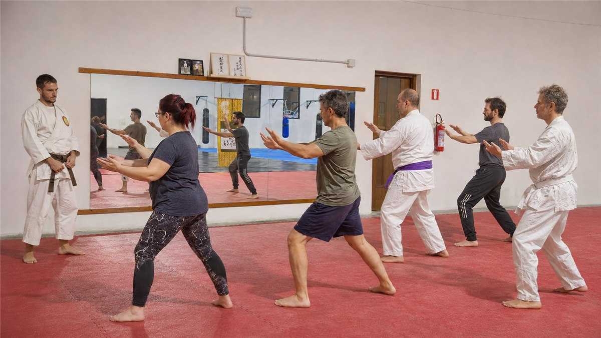

Kikō: movimento e respirazione
Il Kikō, o Qi Gong giapponese, utilizza movimento, respirazione e meditazione per lavorare sul corpo e sul respiro e, secondo la concezione tradizionale, sulla coltivazione del Ki, l’energia vitale.
Movimento, respiro e arti marziali tradizionali, con gradualità.
Un percorso per lavorare su equilibrio, mobilità, postura e presenza mentale. Non servono esperienze marziali precedenti o una particolare preparazione fisica.

Quando
Martedì e giovedì, 18:00–19:00
Dove
Sailing Gym · Viale Elmas 59, Cagliari
Sede e indicazioni →
Kikō, Taikyokuken e kata delle tradizioni Nio Shin Ryu Kempo e Nio Shin Ryu Karate si integrano in un unico percorso marziale.
Il Kikō, o Qi Gong giapponese, utilizza movimento, respirazione e meditazione per lavorare sul corpo e sul respiro e, secondo la concezione tradizionale, sulla coltivazione del Ki, l’energia vitale.
Il Taikyokuken, o Tai Chi giapponese, si pratica attraverso sequenze di movimenti lenti, continui e fluidi, curando stabilità, coordinazione e consapevolezza del corpo.
I kata di Kempo e Karate sono sequenze codificate di tecniche marziali. Nel corso vengono praticati prevalentemente con lentezza e controllo, curando postura, respirazione e qualità del movimento.
Il corso segue la tradizione di pratica del Tempio Tenryuzanji ed è tenuto dal Ninniku Dojo, sede cagliaritana della scuola Sakushinkan.
Il percorso non è orientato alla competizione o alla prestazione atletica. Anche chi ha già esperienza può approfondire la comprensione del movimento e gli aspetti più interni e consapevoli del Budō.
Conosci la scuola Sakushinkan →Contattaci per informazioni e per concordare la prima lezione.
Cerchi il percorso di addestramento a mani nude e con armi? Scopri il corso di Kempo.